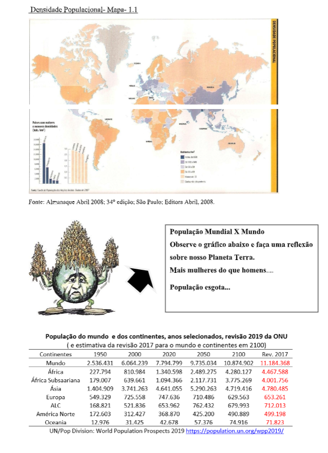
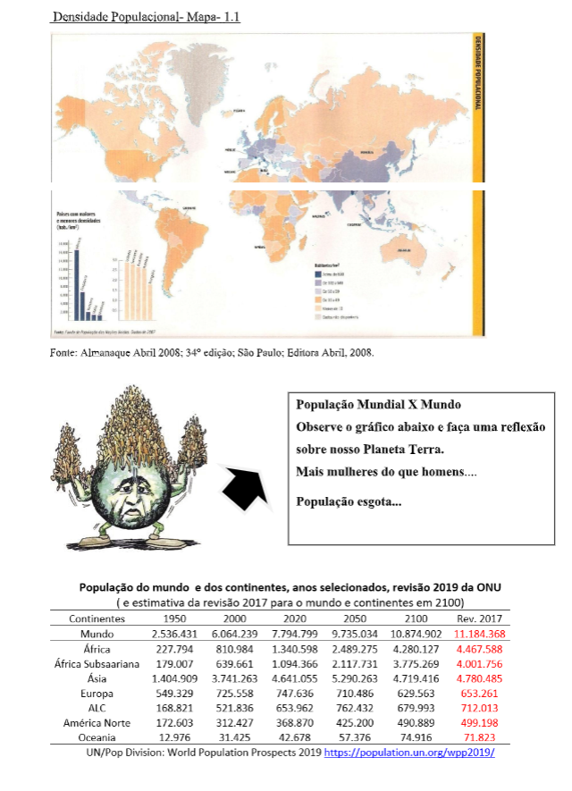
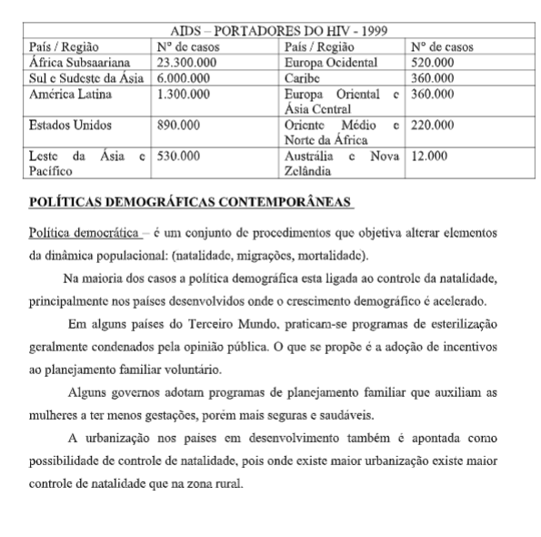

Capítulo 3: Geografia Geral - População Mundial
Questão:As dinâmicas do aumento populacional são um fator muito importante para o conhecimento da vida humana. Com essas informações, os países pensam suas políticas (é preciso saber quantas escolas, hospitais, moradias, etc , são necessárias para bem atender ao seu povo), as empresas prospectam vendas entre outras importantes decisões. Ao estudar este capítulo, você deve tentar responder a seguinte questão: Por quê é importante para o conhecimento da geografia, conhecer a população dos países?
Contextualizando – A indústria Calçadista no mundoEm termos demográficos , a população mundial é o total de humanos atualmente vivendo no planeta Terra . Estima-se que a população global Questão: As dinâmicas do aumento populacional são um fator muito importante para o conhecimento da vida humana. Com essas informações, os países pensam suas políticas (é preciso saber quantas escolas, hospitais, moradias, etc , são necessárias para bem atender ao seu povo), as empresas prospectam vendas entre outras importantes decisões. Ao estudar este capítulo, você deve tentar responder a seguinte questão: Por quê é importante para o conhecimento da geografia, conhecer a população dos países? A produção mundial de calçado aumentou 8% em 2014, para 24 bilhões de pares, destacando-se a China como 'líder indiscutível' ao fabricar quase dois em cada três pares de sapatos, segundo dados do último World Foowear Yearbook. Elaborado e distribuído em todo o mundo pela Associação Portuguesa dos Industriais do Calçado, Componentes, Artigos de Pele e Seus Sucedâneos (APICCAPS), aquele que é descrito como "o mais complexo barômetro à industria de calçado a nível internacional" – e cuja edição relativa a 2014 foi apresentada em julho na Alemanha – evidencia que a estrutura geográfica da indústria permanece "praticamente inalterada" relativamente ao passado recente. Fonte: https://br.fashionnetwork.com/ chegou a 7,7 bilhões, em abril de 2019. As Nações Unidas estimam que a população humana chegue até 11,2 bilhões em 2100. A população mundial continua a crescer desde o fim da grande fome de 1315- 1317 e da Peste negra em 1350, quando chegou a 370 milhões. Uma alta no crescimento populacional (de 1,8%) foi reportado entre 1955 e 1975, chegando a 2,06% entre 1965 e 1970. Este crescimento caiu para 1,18% entre 2010 e 2015 e é projetado que chegue a apenas 0,13% no ano de 2100. O número de nascimentos anuais chegou a um dos seus ápices na década de 1980 com mais de 139 milhões de nascimentos, e é esperado que nos próximos anos o número de nascimentos gire em torno dos 135 milhões (como foi reportado em 2011), enquanto o número de mortos fique em torno de 56 milhões por ano e deverá crescer para 80 milhões até 2040. [6] A população humana na terra chegou a 7 bilhões em 31 de outubro de 2011, de acordo com o Fundo de População das Nações Unidas , ou em 12 de março de 2012, de acordo com o Departamento do Censo dos Estados Unidos . Em 2012, as projeções da ONU indicam que a população mundial continuará a crescer em número cada vez menor no futuro previsível; é esperado que a população humana chegasse entre 8,3 e 10,9 bilhões em 2050. Outras estimativas mostram números menores, com um estudo de 2014 afirmando que a população humana irá variar entre 9,3 e 12,6 bilhões até 2100, e continuará crescendo. Muitos analistas questionam a sustentabilidade de uma população cada vez maior, observando o impacto humano no meio ambiente , no suprimento global de comida e a falta de recursos energéticos. Outros negam esta visão pessimista, afirmando que novas técnicas de agricultura e o desenvolvimento tecnológico (além de muitas áreas ainda abertas para agricultura) podem suportar o crescimento populacional. Além disso, a população humana vai continuar a crescer, mas em um ritmo cada vez menor, principalmente devido a melhor acesso a meios contraceptivos , melhoria na qualidade de vida e melhores oportunidades econômicas para mulheres. Estima-se que o total de humanos que já viveram na Terra gire em torno de 106 a 108 bilhões
 

 TEORIAS DEMOGRÁFICAS
TEORIAS DEMOGRÁFICAS
As duas teorias que tentam explicar o crescimento populacional são de Thomas Malthus (1776-1834) e a Teoria reformista. Teoria Maltusiana : A população mundial cresceria em rítimo rápido, comparada a uma progressão geométrica (1,2,4,8,16,32,64...) e a produção de alimentos cresceria em ritmo lento como uma progressão aritmética (1,2,3,4,5...) se4ndo assim em um determinado momento não haveria mais alimento pata todos os habitantes da terra. Porém isto não aconteceu, pois a alimentação fica concentrada nos países desenvolvidos e a população não cresceu tanto assim. Teoria Neomalthusiana – Após a segunda Guerra mundial (1939-1945) foi levantada a hipótese que se a população continuasse crescendo não haveria alimento suficiente na Terra. Foi sugerido um controle rigoroso de natalidade em países subdesenvolvido e a contestação é que deve melhorar a distribuição de renda. Teoria reformista: Diverge das teorias Mathusiana e a Neomalthusiana. Os reformistas atribuem aos países ricos ou desenvolvidos a responsabilidade pela intensa exploração imposta aos países pobres e subdesenvolvidos, que resultou em um excessivo crescimento demográfico e pobreza generalizada. Para diminuir o crescimento demográfico devem ser feitas reformas.
AS IDEIAS DE MALTHUSEm 1798, um pastor da igreja anglicana, Thomas Robert Malthus, publicou um livro chamado Ensaio sobre o Princípio da População. Nesse livro Malthus fez uma análise sobre o crescimento da população e as suas implicações na vida social e econômica de um país. Para Malthus, o aumento da população não estava sendo acompanhado por um aumento da produção de alimentos. Assim, era necessário que se pensasse em um controle da natalidade. Contudo, devido a sua formação religiosa, a utilização de métodos anticoncepcionais era condenada por Malthus. Segundo ele, a melhor maneira de se reduzir a natalidade era a sujeição moral, ou seja, nenhum homem deveria casar-se e constituir família enquanto não tivesse recursos suficientes para mantê-la. No final do século XIX, as preocupações de Malthus começaram a ser esquecidas. O desenvolvimento da tecnologia agrícola aumentou os índices de produção de alimentos, as condições econômicas e sociais dos países foram melhorando e as taxas de natalidade foram caindo. A industrialização e a consequente urbanização provocaram profundas mudanças no modo de vida das populações. Uma família numerosa vivendo na cidade exigia maiores recursos econômicos do que uma família vivendo no campo. Atualmente, todos os países desenvolvidos apresentam níveis baixos de crescimento vegetativo.
A EXPLOSÃO DEMOGRÁFICA NOS PAÍSES SUBDESENVOLVIDOSO que contribuiu para a explosão demográfica nos países subdesenvolvidos a partir da década de 50? Até o fim da 2ª Guerra Mundial, os países subdesenvolvidos apresentavam uma dinâmica populacional muito parecida com a dinâmica da Europa do século XVIII, antes da Revolução Industrial. As taxas de natalidade eram elevadas e as taxas de mortalidade também. Sendo assim, o crescimento vegetativo era bastante moderado (equilibrado). Contudo, a partir da década de 1950, as taxas de mortalidade começaram a diminuir à medida que esses países começaram a serem beneficiados por novos medicamentos, vacinas, programas de prevenção de doenças, controle de doenças epidêmicas, etc. Essas melhorias foram trazidas dos países do mundo desenvolvido. Neste período ressurgiu a preocupação com a questão do crescimento populacional.
OS NEOMALTHUSIANOSEssa preocupação fez surgir uma nova teoria que tentava explicar as formas de crescimento populacional. Essa nova teoria ficou conhecida como: Teoria Neomalthusiana e era defendida principalmente pelos países desenvolvidos. Essa nova teoria defendia a implantação de políticas de controle da natalidade nos países subdesenvolvidos a partir da utilização dos diversos métodos anticoncepcionais. Os neomalthusianos diziam que o crescimento da população provocava o atraso do crescimento econômico.
OS REFORMISTASOs reformistas se opunham aos neomalthusianos afirmando que: • Não é o crescimento da população que provoca o atraso econômico, na verdade é o atraso econômico que provoca o crescimento populacional. A situação social precária, a miséria e a má distribuição de renda é que provocariam o atraso econômico. • A única possibilidade de controlar o crescimento populacional seria realizar reformas sociais e econômicas que possibilitassem uma melhor distribuição de recursos e a consequente elevação do nível de vida. Com melhor nível de vida as populações estariam mais instruídas para o controle da natalidade. - Vale a pena lembrar que na maioria dos países desenvolvidos não foram aplicadas leis de controle da natalidade - as taxas diminuíram naturalmente à medida que o padrão econômico e social da população melhorou. - É preciso evitar o crescimento exagerado da população, através do planejamento familiar e da decisão consciente. Uma família deve, por si própria, decidir o número de filhos de acordo com os seus desejos e as suas possibilidades financeiras.
O CRESCIMENTO DEMOGRÁFICO
No entanto 1/6 dos habitantes do planeta não têm condições de usufruir o desenvolvimento da medicina. Está comprovada que quanto melhores as condições de vida, menor é a taxa de natalidade. Segundo especialistas em população o primeiro passo para uma política de planejamento familiar é proporcionar à mulher assistência médica de qualidade. O segundo passo é dar educação, informação e oportunidade para discussões sobre métodos anticoncepcionais. O terceiro passo é proporcionar o acesso ao mercado de trabalho, estabelecendo uma nova mentalidade cultural. Tudo isso em meio a uma melhoria geral de condições de vida, que inclui moradia de qualidade, saneamento, nutrição, entre outros, essenciais para que as famílias se apropriem verdadeiramente da cidadania e adquiram autonomia no pensar e no agir. Nas últimas décadas as migrações modificam as populações de alguns lugares, mas são as taxas de natalidades e mortalidades (crescimento vegetativo) é que são responsáveis pelas alterações no quadro demográfico mundial. O crescimento natural ou vegetativo de uma região é a diferença entre natalidade e mortalidade exemplo. Taxa de natalidade...........................25% Taxa de mortalidade.........................10% Crescimento vegetativo.....................15% Quando incluímos a esta taxa o fluxo de entrada e saída da população, ai terá a taxa de crescimento demográfico.
Na antiguidade em razão da precariedade dos recursos médicos as taxas de natalidade foram compensadas pelas elevadas taxas de mortalidade. A fome, a guerra, as epidemias dizimaram regiões tornando o crescimento relativamente lento. A expectativa de vida era baixa e contribuía para certa estabilidade no crescimento, pois o número de nascimento era grande. A urbanização é um fenômeno relativamente novo, e no meio rural o nascimento de um filho é visto como mão-de-obra. Havia uma política natalista no Brasil, principalmente com o objetivo de povoar o oeste brasileiro e resquício desta política é o abono família e o auxilio natalidade. Uma previsão (estimativa) da ONU que em 2050 haveria um grande contingente populacional no mundo e que isso causaria uma catástrofe ambiental tem levado especialistas a estudarem o tema “planejamento familiar”. Em algumas partes do mundo chagam ao extremo de usar esterilizarão em massa e até extermínio de recém-nascidos. Outros usam incentivos a casais com menor número de filhos, situação invertida em relação ao passado. (China e Índia)
UM DILEMA MUNDIALO dilema do mundo atualmente é em relação ao crescimento populacional, pois quem tem disponibilidade econômica para isso, não quer crescer. É o caso da maioria dos países desenvolvidos. Em alguns até se observa crescimento negativo. Nesse caso utilizam como mão de obra os imigrantes, mas também é um problema, pois muitas vezes são tratados como cidadãos de categoria inferior. A solução seria o país desenvolvido compartilhar sua riqueza e seu status com a população menos preparadas técnica e culturalmente. Por outro lado quem pode crescer não quer e quem não pode porque não tem disponibilidade econômica, não para de crescer, é o caso dos países subdesenvolvido. Uma possível para os subdesenvolvidos é a ajuda externa, materializada através de projetos educacionais, de saúde pública e de qualificação de mão de obra. Verdadeiras reformas estruturais para com o tempo estabilizar o crescimento populacional.
Segundo estudiosos, se isso não ocorrer num futuro breve, o mundo será constituído de uma grande massa populacional excessivamente empobrecida e de um mundo rico que definhará demograficamente. Existem ainda novos problemas que fazem parte da lista dos países subdesenvolvidos que não tem estrutura para combatê-los. O exemplo disso tem a África que é um continente que mantém um ritmo populacional acelerado, tem conflitos regionais; a fome, e a AIDS atuando como redutor perverso de sua população. Em Zimbábue, Zâmbia, Malaú e Uganda os infectados pelos Vírus da AIDS é de ¼ do total de adultos e em alguns países a expectativa de vida é sete anos inferiores do que seria sem a doença.
O Japão foi o primeiro país a instituir um controle de natalidade após, a II Guerra Mundial e seguido por outros países. Atualmente a China mantém a mais severa política de controle de natalidade do mundo. No Brasil, não há política clara, mas se observa uma tendência pró-natalidade em várias leis (salário família,) as de proteção à trabalhadora gestante, as do salário maternidade (quatro meses de salários pago pelo INSS) e a proibição do aborto. A explosão demográfica (crescimento intenso e desordenado da população) tem sido objeto de diversas doutrinas populacionais. A de Thomas Malthus foi a primeira em fins do séc. XVIII e no séc. XX chegou a ser revivida como neomalthusianismo. Thomas Malthus – 1766 – 1834 Em sua obra “Ensaio sobre o principio da população”, conclui: que os alimentos crescem em progressão aritmética, enquanto a população tenderia a aumentar em progressão geométrica, gerando fome e miséria das grandes massas. Em fim, que a população cresce em proporções maiores que os alimentos. A tese de Malthus foi contestada por ignorar a estrutura social da economia e as possibilidades criadas pelas técnicas agrícolas. Na atualidade, porém, suas ideias são retomadas com um outro sentido: o crescimento da população mundial aumenta a pressão sobre o meio ambiente e pode tornar inviável a vida no planeta. Neomalthusianismo é uma teoria demográfica que propõe o controle da natalidade como um dos requisitos fundamentais do desenvolvimento econômico e evitar: - Empobrecimento per capita e global da população - Relação desfavorável entre crianças adultas e idosas - A expansão da força de trabalho em detrimento ao capital (trabalho-capital) - Deterioração ecológica, isto é a destruição do meio ambiente e o esgotamento dos recursos não renováveis do planeta.